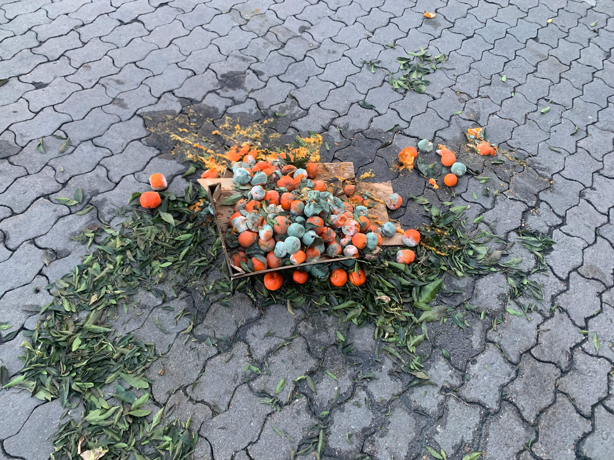
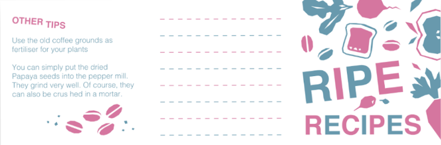
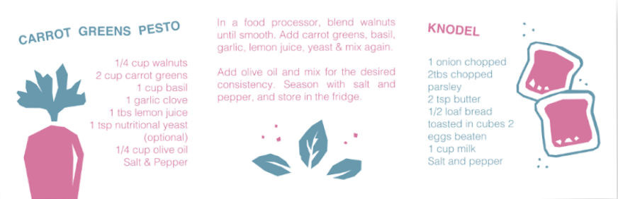
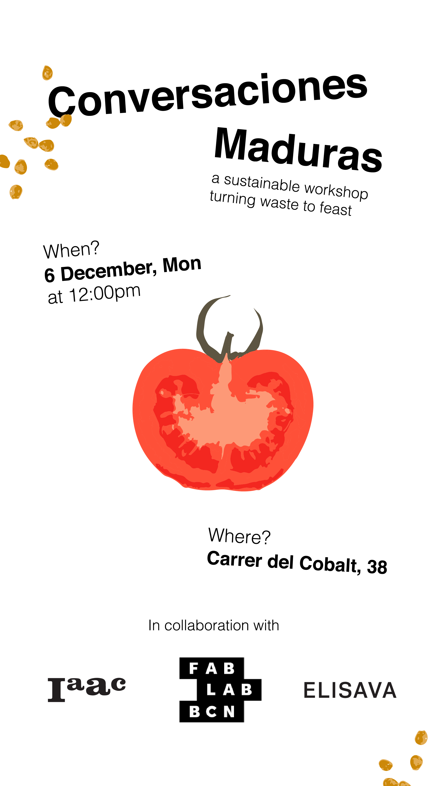
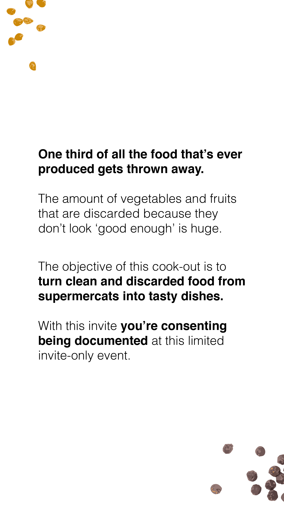
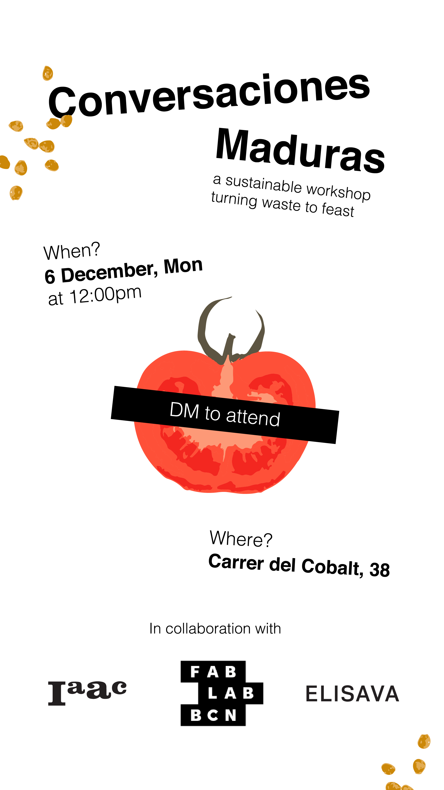
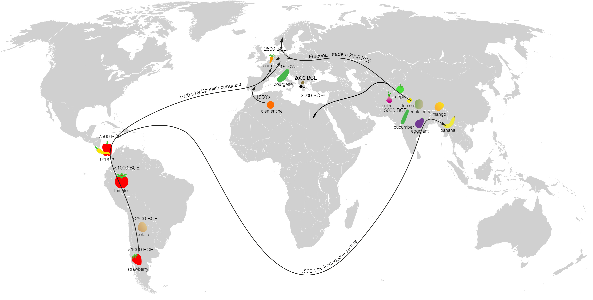
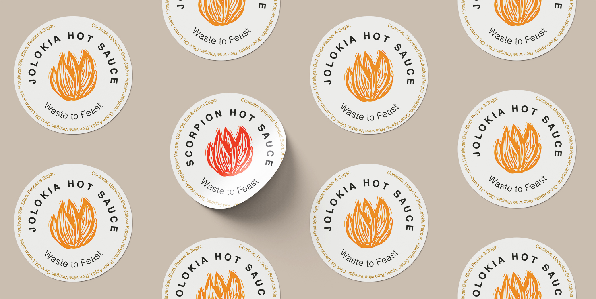
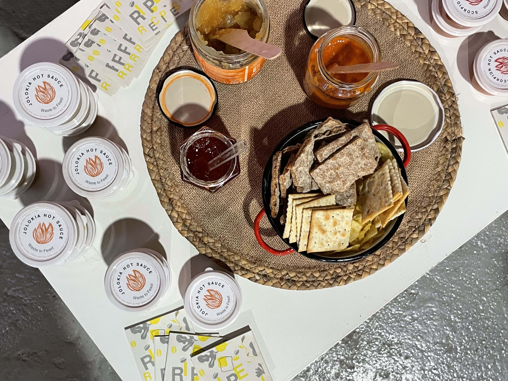

TERM I
Design Dialogues
Conversaciones Maduras
This intervention was born out of the innate hunger to address the fact that roughly one-third of the food produced in the world for human consumption gets lost or wasted, which is nearly ~1.3 billion tonnes annually.
PHASE 1
Conversaciones Maduras addresses and acts on the negligence of food waste by closing a feedback loop. The first medium consisted of a workshop that upcycled waste resources collected from the Mercabarna warehouses into a cooking workshop. The participation involved people from different positionalities, cultures and backgrounds within BCN.
Mercabarna is a food-trading state that comprises of 4 wholesale markets. It is a public limited organisation, established in 1967. Thanks to Arnau (Anna’s friend) we got a tour of the pavilions G and H, as well as Biomarket, where mostly vegetables and fruits are sold. Products usually go through 3 phases before being discarded and thrown away into shredders and organic matter containers. This happens once in every 2-3 days normally and almost everyday at the Biomarket.
We were able to rescue many fruits and vegetables that would have been discarded, despite the difficulties we found due to security at the facilities and current political regime.

Fig. 8.1 Discarded food at the Mercabarna Estate
For the pilot workshop, we wanted to prepare a few resources to safe-guard the fear of consumability of the food. Also, some rescued fruits were too ripe to last more than 3 days, so we decided to use certain pasteurisation and preservation techniques. Compota de manzana madura was bottled out of apples, spicy salsa and Aam Papad out of mangoes. This was served with crackers for people to try before diving into the workshop. To spread a word further, certain collaterals like pamphlets, recipe books and Instagram creatives were developed. The recipe book was inspired from the ‘Absolute zero waste book’ by Ikea kitchens.
A Ripe Recipes booklet was designed as a part of workshop collectibles to inform people about easy + makeshift recipes that reduce food & kitchen waste.

Creatives for communication through Instagram & Whatsapp were developed in English and Spanish.

The workshop consisted of various activities like tracing food origins, creating fertilizer and compost out of kitchen waste and making art out of vegetable peels. Certain photographic data sets were created to speculate the neglected resourcefulness as a visual using Artificial Intelligence. The expected output is a visual life-cycle covering a product’s origin, shelf-life and degradation. A survey was conducted to build a website for people to access the information and collateral. The same platform was also used to voice their feedback and thoughts regarding the food waste ecosystem.

Fig. 8.2 The Map derived from the 'Trace your Origins' activity at the workshop
PHASE 2
For the second phase, the workshop and its results were exhibited at the Design Dialogues event at IaaC, Barcelona. We interacted with faculties, practitioners, design-activists and prominent stakeholders from the Industry. To magnify the possibilities of such an intervention, a hot-sauce brand was envisioned and developed. Two taste profiles (European and Indian) were created using products from the Mercabarna ecosystem. The real components were made evident on the labels to maintain the main driver of Conversaciones Maduras, which is transparency and authenticity. The sole aim was to have a real-time prototype of the consumable and food-grade product that could very well be sold and put back into the market/system. During the event, many people showed an interest in buying the product in exchange of money, even though it was only a workshop take-away and collectible.

Fig. 8.3 The Hot-sauce labels with ingredients and profiles

Fig. 8.4 The Hot-sauce labels pop-up at Design Dialogues
The Design Intervention was extremely successful in asking the right questions:
Where does my food come from? Who controls it?
How many miles did my food travel before ending up on my plate?
Are there ways I can use to preserve my food?
Can I contribute and support initiatives that curb food waste?
How much food waste is too much food waste?